- underdevelopment screenshots -
|
I started this project few years ago mainly to simply do the automated detection and catalog matching for astrophotography (even in low quality/amateur)
|
|
Meanwhile, I added some other features (like it can draw the path asteroids or artificial earth satellites passing through at the time the picture was taken)
|
|
The project is to be released as a pre-alpha (concept proof) and for testing of some of the main functions, hopefully in a few weeks. Anyone interested in helping me to test and optimize it please contact me. Some of the project screenshots: |
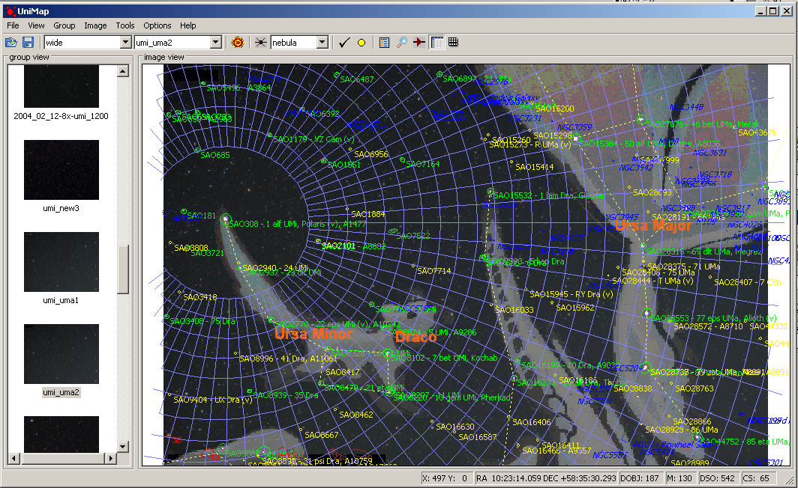 Main Screen - Ursa Major/Minor detection with constellation artwork |
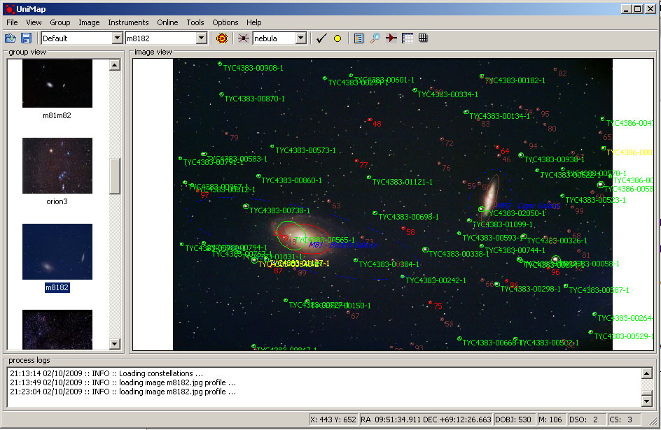 Main Screen - m81/m82 galaxy detection |
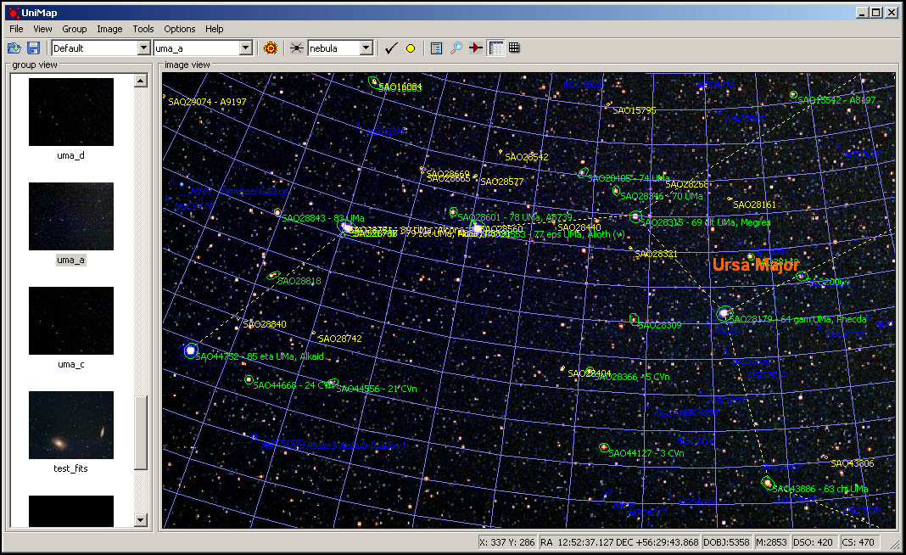 Main Screen - Ursa Major detection with grid and constellation lines |
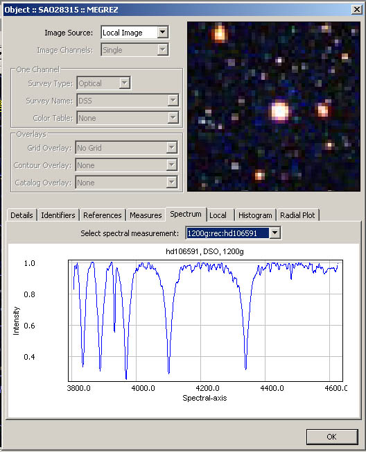 Star/Object details Screen - Spectral Tab |
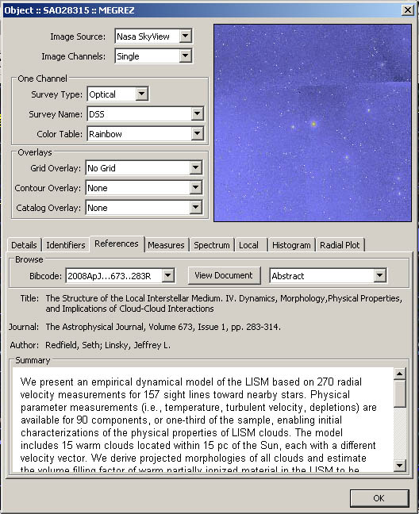 Star/Object details Screen - compare with NASA skyview/DSS image and References tab |
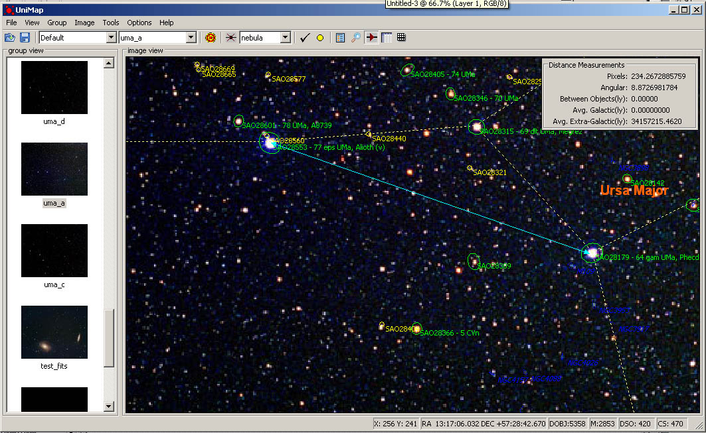 Main Screen - distance measurement tools |

Instruments Screen - current version - tracking a laser pointer on the wall with webcam |
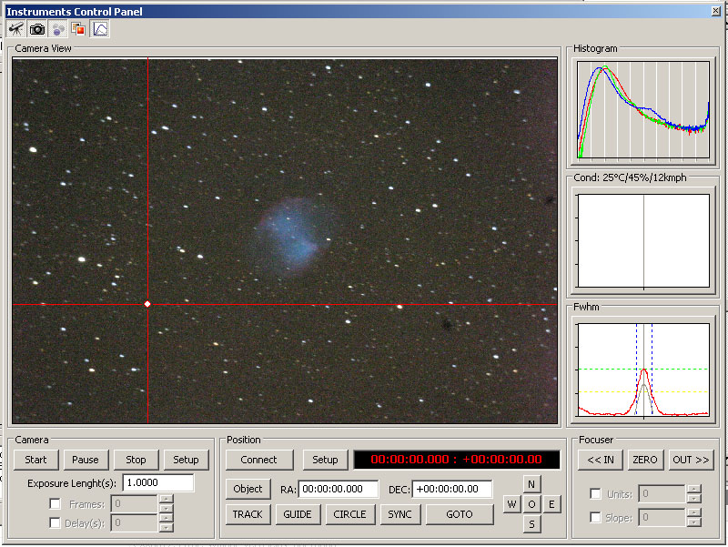 Instruments Screen & icons - previous version - tracking a star with a digital camera |

Instruments Screen & icons |
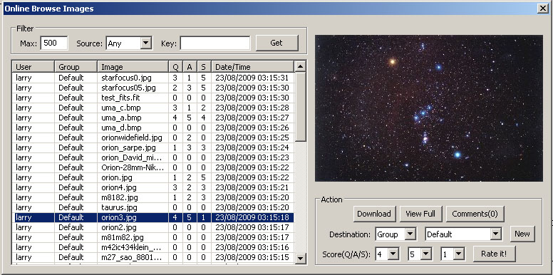 Unimap online image browse/download/rate |

3d Image Color Plot - OpenGL |

3d Image Color Plot with Photo map |

3d Image Color Plot |

World Wide Observatories Interactive map |
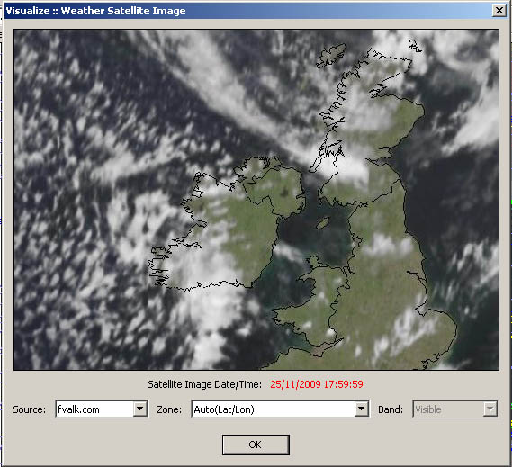 Current weather satellite view |

Interactive world wide Light Pollution map |
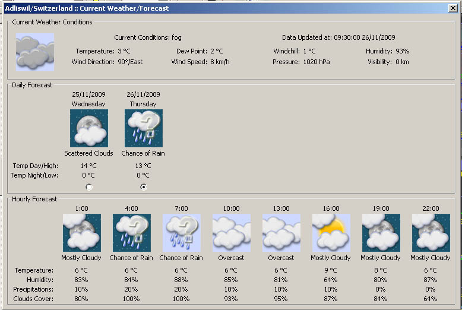 Weather Forecast Screen |
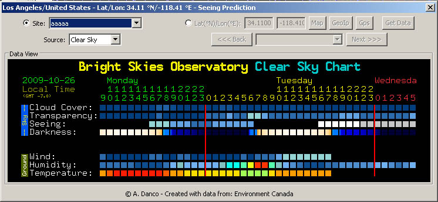 Seeing prediction - 48h - for North America with ClearSky |

Seeing prediction - 7day - for Europe with Meteo Blue |
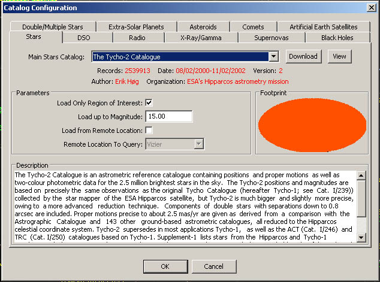 Catalog Selection - Stars Tab |
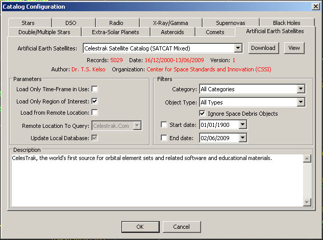 Catalog Selection - Earth Artificial Satellites Tab |

Sample Filter Screen |
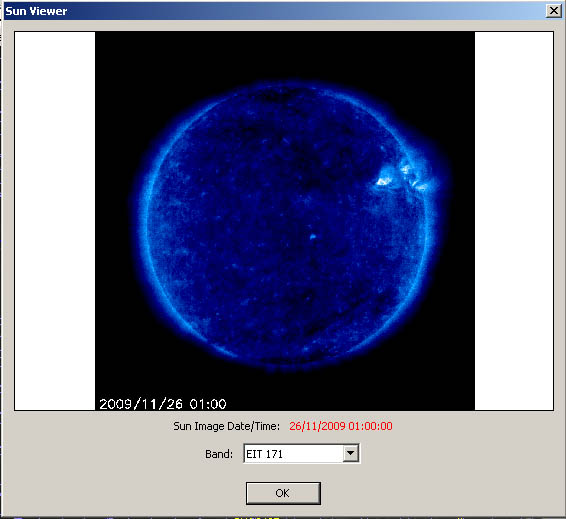 Current Sun View |